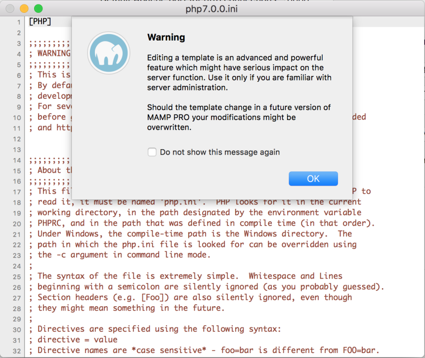

近期在運用mamp pro環境下寫php
一開始土法煉鋼覺得沒有debug自己也能抓到蟲
享受一片白的世界好一陣子
但隨著越寫越深入發現這世界不再如此單純
只好開始尋找如何運用mamp除蟲
因為mama本身就有Xdebug除蟲程式，所以只要把它打開就好了
1.選擇mama pro上方php標籤列，並把勾選打開Dedugger:Activate Xdebug
點擊打開Dedugger:Activate Xdebug
這時候就要去修改ini檔囉！！
之前為了找ini檔翻遍整個mamp
但是踏破鐵鞋無覓處，其實本身檔案的ini檔就在工作列裡
選擇自己版本的ini檔
可以從這邊觀看到自己是屬於哪一版的
然後打開ini檔

嘿對，他告訴你這東西別亂改要注意
找到
display_errors = MAMP_display_errors_MAMP
這一行原本是長這樣的
然後在前面加個分號
並在底下打
;display_errors = MAMP_display_errors_MAMP
display_errors = On
（在原始碼前打分號是為了讓他轉註釋，以免未來需要做更動時，卻忘了他在哪裡）
完畢後按儲存
從新開啟mamp環境
好拉！！如此一來瀏覽器就設定完成會幫你抓錯而不是給你一片白囉！！
參考文章
How To Setup and Configure PhpStorm, Xdebug, and MAMP for Debugging
↑
comments powered by Disqus